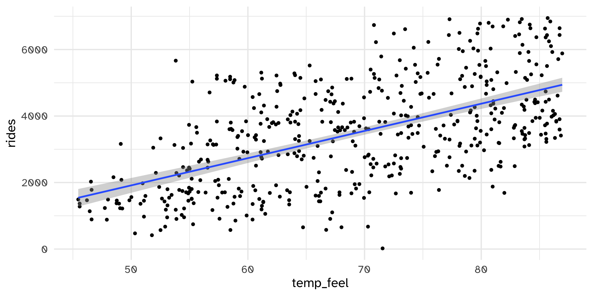
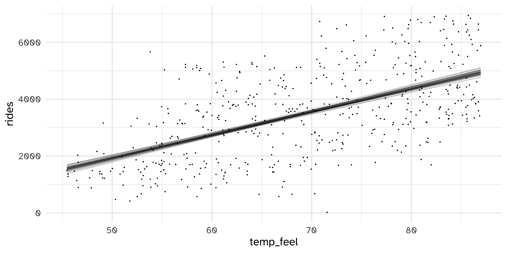

Evaluating Regression Models
Day 17
Carleton College
Stat 340 - Fall 2025
Plan for today
- Exam recap
- Evaluating regression models
What is the purpose of exams?
- Isolate the knowledge that you have in your brain that you can recall “on the fly”, as opposed to with reference materials
- Provide the instructor with feedback about what concepts/topics the class as a whole understands, and which did not go as well.
- Provide the student with feedback about what concepts/topics you understand, and which might need more time/practice
- Result in scores that summarize your performance about a (biased) selection of course material on a specific day
- Major contributor to your final course grade, which should provide a signal to outsiders about your mastery of the course content
How I grade exams
- Take a first pass through all the problems
- For open-ended questions, isolate key points that I’m looking for, and try to give out 50% credit if you hit the most important idea
- Even if open-ended answer is very very close, take off a small amount of points for even small mistakes
- Check results of each question. If either test “fails”, go back and look at the question and perhaps reassign point distribution. Sometimes make question a bonus point
- multiple choice: majority of class got it right
- open-ended: majority of class earned majority of the points
- Check overall distribution:
- Is the median at least in the upper 80’s?
- Is the mean not too far from the median?
- Is the middle 80% in a reasonable range?
Exam results
- Mean: 84.2%
- Median: 86.3%
How I interpret exam grades:
- High 80s and above: great job! You demonstrated a really solid understanding of the material. You might have made a few small mistakes or 1-2 larger errors, but I do not have major concerns about your understanding.
- 70 to mid-80s: You probably had some high points and some weak points on the exam. I am not overly concerned about your learning, but there is room for improvement. A good final course grade is still well within your reach, but you might want to make some changes in how you’re preparing for exams.
- Below 70: There are either multiple key concepts that you are missing, or you had a bad exam day. To end up with a good final grade in the class, you’ll want to make major changes to how you’re approaching coursework and/or preparing for the next exam
Corrections are designed to:
- give you a chance to revisit key concepts that you missed on the exam
- mitigate the impact that a bad exam day has on your final grade
If your score was below 80%:
- you can submit written corrections to earn back 30% of the points you lost, with corrected grades capped at 80%
If your score was below 88%:
- you can take a 15 minute make-up quiz on Friday of Week 7 to earn back 30% of the points you lost, with corrected grades capped at 88%
Evaluating regression models
Last time: normal regression model
Normal regression model:
\[Y_i | \beta_0, \beta_1, \sigma \sim N(\mu_i, \sigma^2)\]
\[\mu_i = \beta_0 + \beta_1 X_i\]
\[\beta_0 \sim N(m_0, s_0^2)\]
\[\beta_1 \sim N(m_1, s_1^2)\]
\[\sigma \sim \text{Exp}(l)\]
Last time: bikeshare rides against feels like temperature
\[\beta_{0c} \sim N(5000,1000^2)\]
\[\beta_1 \sim N(100,40)\]
\[\sigma \sim \text{Exp}(1)\]
Setup prior model with {rstanarm}
Check prior understanding
Warning!
Slightly different from code in book
Data
Fit with {rstanarm}
# A tibble: 4 × 5
term estimate std.error conf.low conf.high
<chr> <dbl> <dbl> <dbl> <dbl>
1 (Intercept) -2185. 217. -2465. -1902.
2 temp_feel 82.0 3.13 77.9 86.0
3 sigma 796. 13.6 778. 813.
4 mean_PPD 3484. 50.0 3420. 3548. Simulated model lines
Posterior prediction: “by hand”
If we know tomorrow is going to be 70 degrees in DC, what is a plausible range for the actual number of rides?
Posterior prediction: “by hand”
(Intercept) temp_feel sigma y_prediction
1 -2257.234 82.80264 793.7888 4068.592
2 -2482.038 85.36287 781.4378 3396.589
3 -1880.359 78.49592 792.1759 4232.939Posterior prediction: “by hand”
If we know tomorrow is going to be 70 degrees in DC, what is a plausible range for the actual number of rides?

Posterior prediction: shortcut
10% 90%
1 2543.922 4576.725Posterior predictive check to assess model fit
We can also use posterior predictions on the entire original dataset to evaluate how well our model is performing.
first_set <- head(bike_chains, 1)
beta_0 <- first_set$`(Intercept)`
beta_1 <- first_set$temp_feel
sigma <- first_set$sigma
set.seed(84735)
one_simulation <- bikes %>%
mutate(mu = beta_0 + beta_1 * temp_feel,
simulated_rides = rnorm(500, mean = mu, sd = sigma)) %>%
select(temp_feel, rides, simulated_rides)
one_simulation temp_feel rides simulated_rides
1 64.72625 654 3631.9119
2 49.04645 1229 1705.6381
3 51.09098 1454 2593.0776
4 52.63430 1518 2289.0876
5 50.79551 1362 2581.0295
6 46.60286 891 2858.3697
7 45.57992 1280 1558.0549
8 49.23176 1220 3284.3318
9 46.44257 1137 1840.5795
10 45.57947 1368 1912.1369
11 48.95717 1367 1744.6012
12 54.33008 1026 1194.4914
13 53.07953 953 1924.3632
14 47.90939 883 1079.6779
15 52.90997 674 3110.9656
16 58.85798 1572 1630.0394
17 54.95450 1844 2796.1785
18 46.20497 1468 3044.1323
19 53.10734 1799 2934.1983
20 50.32400 472 2296.1045
21 51.77300 416 1163.2426
22 51.09134 975 2077.3483
23 54.52898 956 1135.9821
24 48.76250 1459 2510.6303
25 53.10770 1313 1620.7458
26 54.89753 1454 4638.8112
27 48.00902 1489 1710.6333
28 53.87522 905 3292.8552
29 58.25039 1269 2353.9159
30 59.32922 1592 2805.8123
31 49.84214 1466 3724.4176
32 45.45932 1491 1708.9314
33 51.21581 1597 2088.3423
34 52.96586 1184 2157.6562
35 61.17017 1192 2791.7221
36 67.85150 1705 2810.1724
37 54.88466 1675 3080.4451
38 60.45800 1897 1846.4799
39 70.57922 2216 4353.3322
40 78.07847 2348 4670.7271
41 67.22636 1103 2993.7796
42 56.95970 1173 3490.4169
43 57.56675 912 2700.7802
44 48.74297 1376 2161.0545
45 54.11453 1778 2421.7021
46 58.02719 1707 3653.4422
47 63.54149 1341 2447.7128
48 57.39728 1545 2574.3982
49 63.59981 1708 3610.3396
50 55.74911 1714 2300.0818
51 50.01197 1562 1905.0876
52 55.01111 1730 1556.1407
53 66.09011 1437 3933.0283
54 53.46149 1628 2638.0426
55 59.21600 1817 3043.1190
56 57.79472 1700 3569.4611
57 66.71012 577 3379.4479
58 59.45000 1730 1034.5889
59 61.31750 1408 2483.8657
60 66.20819 1435 2256.5556
61 61.88000 1687 2592.8222
62 60.63602 1767 3168.9496
63 65.02370 1871 3561.5463
64 68.92997 2320 3864.8591
65 79.43081 2355 2584.2563
66 73.98725 1693 4069.3038
67 61.31750 1424 1712.5985
68 68.87615 1676 3700.1635
69 62.41451 1918 4146.9570
70 56.37497 1699 2412.5085
71 55.18139 1515 1528.7772
72 54.53051 1221 2760.3708
73 55.18166 1806 2979.2237
74 58.36172 2108 2379.6238
75 58.76150 1368 2737.7647
76 55.18175 1506 2174.6029
77 57.51086 1920 3041.3430
78 60.40733 1354 2582.7023
79 66.08903 1598 3176.1730
80 80.86361 2381 4762.3869
81 67.85150 1628 2944.9110
82 71.03264 2570 3538.1684
83 61.20311 1299 4141.6654
84 62.73761 1576 3664.6222
85 70.40633 1707 4911.5983
86 82.86953 2493 6286.5856
87 76.37486 1777 5049.3436
88 69.55547 1953 3430.0920
89 73.64678 2738 3970.5264
90 71.77217 2484 1593.5432
91 70.29428 674 4210.0562
92 72.11264 2186 3291.0649
93 77.28314 2760 3317.5531
94 76.03322 2795 4154.0325
95 82.79528 3331 3737.8914
96 72.85028 3444 3387.8108
97 60.97586 1506 3922.5392
98 72.51089 2574 3017.5763
99 81.65867 2481 5320.5101
100 83.70500 3300 2576.0957
101 85.46747 3722 4720.0807
102 83.76278 3325 4485.0302
103 84.10361 3489 6074.0487
104 76.77167 3717 4210.3077
105 73.76189 3347 4811.7304
106 72.33836 2213 3724.2644
107 79.95497 3554 4382.4839
108 84.38711 3848 4670.5776
109 68.41850 2378 3023.4129
110 71.77253 3819 3039.2056
111 74.67053 3714 3966.6285
112 78.13589 3102 4004.6533
113 78.70397 2932 3615.1192
114 79.04489 4109 4767.3548
115 79.55600 3632 4705.4832
116 79.10267 4169 5306.2722
117 76.48700 3413 5078.3264
118 77.05661 2507 4415.9798
119 80.24000 2971 5454.0275
120 81.54608 3185 5631.5188
121 80.46761 3445 3562.7817
122 79.44422 3319 4494.6871
123 77.96678 3840 3581.7163
124 79.61378 4008 3784.1435
125 83.47775 3547 4389.8797
126 83.70500 3084 5318.2803
127 85.12664 3438 3257.9520
128 86.43317 3833 4800.8679
129 84.84197 4414 4966.0422
130 85.52264 3473 3964.2123
131 86.14886 4157 5305.5446
132 85.23914 4164 4814.4983
133 85.58114 3222 3633.1768
134 86.03447 3981 4557.7915
135 85.58114 3311 6056.2147
136 86.54603 4614 5275.2527
137 86.71622 3905 4461.8352
138 85.52336 4429 6989.4057
139 86.43272 3852 6072.8892
140 78.36800 2506 4613.1853
141 80.98061 1878 3689.2514
142 81.98249 1689 5379.4049
143 84.10514 3127 4178.8826
144 86.71658 3595 4336.2051
145 86.83061 3413 4499.0428
146 86.19170 4023 5416.5142
147 86.31986 4062 5728.1697
148 73.53275 4018 3287.9698
149 75.06608 3077 5118.8883
150 76.14833 2921 4098.2653
151 79.67075 3848 3686.8797
152 79.89953 3203 4630.1508
153 81.54797 3813 5575.5317
154 81.94667 4240 4278.3271
155 78.99125 2137 4255.6214
156 82.79708 3647 4180.9868
157 83.53733 3466 4323.3734
158 85.01378 3946 5800.7579
159 83.70725 3643 4291.3642
160 83.76422 3427 4959.4244
161 83.70608 4186 4925.8604
162 81.03461 4372 4188.7922
163 69.15767 1949 3445.3339
164 67.28414 3240 2093.3405
165 74.55722 3970 4668.6623
166 79.44242 4267 3929.3227
167 77.39636 4036 5151.6331
168 78.19178 3174 4930.1615
169 79.15847 3114 5308.8970
170 80.86325 3603 4200.7792
171 81.14864 3896 3687.2962
172 78.59453 2199 3344.2114
173 81.66236 2623 5798.2866
174 79.67075 3115 4201.2466
175 76.88525 3318 5502.5294
176 77.28386 3293 4865.9758
177 77.96525 3857 5769.4034
178 79.04489 4111 4838.4975
179 73.98725 3724 5055.4912
180 70.12364 3628 2232.9998
181 70.29428 2809 5905.2766
182 70.00997 2762 2811.2706
183 73.13603 3488 3543.4863
184 73.70375 3992 3517.1228
185 74.55614 3490 4149.4944
186 73.13414 2419 3863.1938
187 60.69308 3291 2357.6441
188 52.51217 570 1711.5818
189 64.04567 3307 1519.9905
190 67.73792 3658 1465.4966
191 67.11197 3816 2668.9602
192 68.53289 3656 3747.3449
193 68.30528 3576 2989.4589
194 61.14686 2770 2656.8363
195 64.61222 2697 2687.6770
196 68.07839 3662 2513.0766
197 69.10214 3829 3622.8200
198 68.81711 3804 3834.5912
199 65.63489 2743 1999.4792
200 59.61353 2928 2758.3743
201 64.21478 2792 3705.6636
202 70.74950 2713 3343.7617
203 77.68211 3746 4182.3888
204 72.67892 1672 4049.0012
205 61.08989 2914 3246.8165
206 56.54489 3147 1379.5898
207 61.20347 2720 2474.9037
208 73.13522 2733 3473.4074
209 72.05558 2545 3870.8937
210 69.95264 1538 2720.8311
211 70.74833 2454 4884.0400
212 66.26039 1697 3836.6239
213 66.65783 1819 3879.1332
214 73.02200 2261 3476.1984
215 76.11098 3614 5086.7159
216 72.62375 2818 5150.0473
217 60.00989 3425 3342.6832
218 59.49986 3545 1657.0370
219 61.82897 3672 4320.4604
220 59.95436 2908 4191.7031
221 63.41900 2851 4517.9334
222 67.45325 3578 3095.8795
223 73.07600 2468 3477.1033
224 68.02214 655 2034.0101
225 55.12442 3172 3308.1401
226 60.57878 3359 2510.3236
227 54.78386 2366 2324.4859
228 59.10242 3368 3317.9081
229 69.10133 3528 1965.1111
230 64.38425 3399 3180.5737
231 54.44339 2464 2978.9282
232 54.10211 2211 2320.8886
233 57.28397 3143 2218.2049
234 67.68086 3534 4133.8000
235 70.52153 2553 3957.7863
236 70.35089 2841 4469.7126
237 65.97617 2046 3392.3464
238 58.93178 856 3131.7075
239 60.39815 887 2394.6052
240 61.48697 1059 2739.6566
241 57.19766 2047 1554.1455
242 60.69308 2508 2961.5072
243 69.27089 1820 3870.9686
244 65.80589 1608 3354.5910
245 54.70736 1707 1016.7568
246 57.05708 3132 1379.8055
247 62.62403 3791 3518.3475
248 62.62322 2826 2462.1303
249 60.69434 3425 4097.0322
250 57.45389 2085 1105.5065
251 66.37442 3828 3201.9168
252 54.44258 3040 3124.2243
253 48.47783 2160 1274.0354
254 46.54625 2027 2180.7792
255 49.15967 2081 1824.9779
256 64.78502 2808 2408.2192
257 56.77286 3267 1902.3847
258 49.10342 3162 2281.2336
259 51.88622 3048 1008.4118
260 47.73875 1234 2048.0642
261 46.60250 1781 3023.0044
262 53.87522 2287 2765.3448
263 63.41972 3900 4541.5267
264 58.53389 3803 3298.8159
265 64.04450 3831 3597.5407
266 61.37411 3248 2272.3986
267 56.54489 2685 3088.1677
268 55.63625 3498 2806.7245
269 66.31853 4185 3602.0912
270 73.98842 4275 3863.4450
271 67.90739 3571 2962.8168
272 59.84114 3841 2328.2719
273 56.54525 2448 683.1435
274 55.80689 2629 4041.9564
275 58.67834 3578 1969.5184
276 64.49936 4176 4626.5990
277 55.97789 2693 3209.3415
278 55.57892 3667 1509.2635
279 58.42022 3604 2378.4488
280 50.97803 1977 1680.7065
281 52.51217 3328 2713.5395
282 62.05514 3787 2013.2203
283 63.64661 4028 3018.4715
284 61.71458 2931 3907.3797
285 63.64661 3805 2901.0597
286 63.98825 2883 3026.7457
287 55.92092 2071 1454.8300
288 56.60519 2627 3452.8178
289 58.56017 3614 2999.4481
290 67.34003 4379 2275.6003
291 72.00014 4546 3742.8836
292 68.98739 3241 2838.1301
293 55.01075 2415 2534.3380
294 64.21586 4069 1777.7515
295 63.81725 4134 2945.1392
296 63.36230 1769 4039.2612
297 74.78339 4665 2992.6376
298 64.38578 2948 3178.9755
299 69.21428 3110 4457.8639
300 59.27189 2713 3004.1135
301 53.70539 3130 1857.0534
302 54.95378 3735 1958.6703
303 66.65900 4484 3455.2727
304 79.21436 4896 4564.2844
305 67.73747 4122 2522.5277
306 56.99903 3150 3812.5568
307 64.37030 3253 3509.2720
308 73.36328 4460 4420.6582
309 80.86361 5085 5124.0825
310 81.37553 5315 4101.2701
311 79.95425 5187 2120.4580
312 71.26061 3830 3313.4784
313 77.45414 4681 3269.0454
314 73.76000 3685 4649.4241
315 79.95389 5171 4077.7903
316 80.46797 5042 4296.3227
317 78.19322 5108 3676.5079
318 79.84103 5537 3453.7277
319 83.30603 5893 4530.6199
320 75.80597 2339 5457.0440
321 71.37392 3464 2932.5913
322 71.48750 4763 4263.1916
323 60.40886 4571 2619.3247
324 74.38550 5024 4372.3251
325 75.40736 5299 5369.7859
326 65.80589 4663 2732.9851
327 69.95372 3934 2695.4600
328 69.55583 3694 3688.2975
329 70.47617 4728 4516.4863
330 73.53347 5424 3759.5392
331 70.80467 5265 1331.9437
332 67.16903 4653 3775.7623
333 70.35161 3605 3586.1794
334 76.31825 2939 3950.9698
335 74.89742 4680 4216.5848
336 71.26097 5099 3822.5001
337 66.88436 4746 3149.2562
338 70.86272 5146 4245.7937
339 75.91964 4665 2838.4173
340 83.64875 4286 4465.8615
341 73.13342 4020 4601.6428
342 76.37414 5719 4421.6988
343 78.41975 5950 4172.3593
344 80.86289 4083 3885.5281
345 67.05536 907 2994.0438
346 59.10125 3019 3124.8504
347 68.47547 5115 2893.7490
348 74.32853 5541 3737.0488
349 75.52247 4551 5184.6036
350 72.73733 5219 4490.0013
351 65.97536 3100 3335.2868
352 72.51089 4075 3438.0100
353 73.19264 4907 2837.6755
354 83.93189 5087 5132.0394
355 80.41064 5502 4402.9192
356 80.35178 5657 2869.9446
357 85.18253 5227 5722.2837
358 84.61472 4387 3731.8362
359 81.20633 4224 3067.6738
360 79.44278 5265 3811.5538
361 82.17239 4990 4190.4018
362 81.77225 4097 4283.1031
363 76.26047 5546 4268.2832
364 81.03353 4807 4297.0468
365 84.67142 3946 3723.4282
366 81.49100 2501 5234.8818
367 83.87636 4490 4685.7523
368 85.63775 6433 4803.5733
369 83.53517 6142 4500.4625
370 84.55703 4425 3504.8285
371 82.91003 3729 6066.1390
372 84.27425 5254 3405.1518
373 84.61508 4494 4812.3396
374 86.60300 5711 3763.0314
375 86.71658 3594 6144.8025
376 82.96592 5325 5149.7382
377 83.76197 5147 5045.8459
378 84.04547 5927 4735.5741
379 79.33028 6033 4561.3150
380 80.80628 6028 4106.7494
381 83.24978 6456 4597.7247
382 85.80758 6248 5321.7674
383 85.80875 4495 3867.9512
384 85.97786 6102 5309.0596
385 85.52372 4739 5324.3908
386 83.47775 4344 3575.9082
387 81.03578 4446 4342.9962
388 85.52336 6365 4864.6930
389 81.49208 3195 5871.7079
390 53.81600 5665 2671.9127
391 86.31986 3341 3806.7398
392 85.63703 5504 5727.4355
393 86.09225 5925 5409.4250
394 85.63964 3772 5453.7263
395 84.10325 5657 4528.4629
396 82.90886 6407 5620.8716
397 81.88628 6697 3981.6038
398 83.30675 6820 5139.7183
399 84.16022 6750 5488.2265
400 85.46747 6630 4785.0403
401 84.72803 5554 4192.5046
402 82.85603 3702 4746.2214
403 80.63636 6803 3446.5838
404 79.89728 6781 4381.6086
405 83.47739 6917 6192.8358
406 86.94392 5883 5130.1210
407 78.70397 5453 3641.5029
408 77.22617 6435 3365.3551
409 80.97611 6693 4771.3335
410 85.69517 6946 4419.1017
411 86.71775 6642 6736.2387
412 84.72767 6370 4813.3272
413 79.72664 5966 3333.7940
414 78.58967 4874 3410.8310
415 78.08000 6015 3889.6038
416 80.80997 4324 4548.1346
417 85.92197 6844 4641.2431
418 86.71775 6437 5055.0540
419 84.21683 6640 6776.4823
420 80.46689 4934 5709.5415
421 71.43008 5791 3780.6367
422 77.28278 6911 2912.8008
423 70.80503 6736 3344.8193
424 70.97639 6222 3026.7982
425 67.22564 4857 4933.6010
426 73.47614 6612 4726.6740
427 72.50972 6482 2299.9249
428 78.13625 6501 3608.6742
429 80.41064 4671 3675.3285
430 74.55578 5284 4283.6607
431 73.07861 4692 3611.5466
432 75.46478 6228 4213.2491
433 79.72736 6625 4754.8474
434 82.28489 6898 3721.9387
435 79.67192 6484 4833.7094
436 79.04750 6262 5915.6866
437 78.36197 5209 4886.2188
438 74.09939 3461 4273.5222
439 71.54600 20 5232.0227
440 59.89181 1009 2106.9089
441 64.49900 5147 2228.8853
442 65.29478 5520 2901.9430
443 64.04378 5229 4566.9379
444 61.14614 4109 1976.4971
445 61.65842 3906 2261.9278
446 59.72675 4881 2166.8373
447 57.34103 5220 1859.0460
448 56.71589 4709 3439.6283
449 62.77019 4975 3732.1214
450 63.98717 5283 2468.0279
451 67.45433 4446 5093.6743
452 69.95417 4562 3639.9777
453 74.78447 5172 4513.2014
454 61.09025 3767 2112.8574
455 57.34067 5122 1599.7910
456 61.20428 5125 3560.5259
457 61.37447 4316 2823.9404
458 62.39714 3747 3013.3965
459 65.80589 5050 2438.1344
460 66.26003 5100 2485.8603
461 64.84028 4531 1938.6831
462 63.53339 1470 3142.6629
463 66.09011 2307 2240.8003
464 54.38678 1745 3048.9666
465 55.18247 2115 3277.6229
466 62.51036 4750 2424.5815
467 57.34022 3836 2641.7805
468 58.07858 5062 3202.7491
469 58.85798 5080 1691.7570
470 61.14803 5306 3973.4684
471 60.52136 4240 4235.4729
472 64.32872 3757 2594.2436
473 73.02164 5679 4527.4562
474 74.21486 6055 3674.1177
475 70.52108 5398 4443.7976
476 55.23836 5035 1622.2690
477 60.97622 4659 3385.5060
478 67.05572 4429 4580.4809
479 67.11314 2787 2963.3275
480 71.20175 4841 830.3410
481 62.45267 5219 2137.7418
482 58.76042 5009 2178.8248
483 58.47692 5107 3082.1254
484 58.47728 5182 1904.5829
485 62.45447 4280 3875.4739
486 65.29442 3248 2061.0992
487 68.13500 4373 3116.4104
488 68.87372 5124 3530.9264
489 62.79458 4934 3176.0088
490 62.16953 3814 3546.2074
491 59.15903 3402 3359.9683
492 53.25017 1544 736.3633
493 55.35239 1379 1931.6675
494 55.30100 746 1906.7000
495 58.50185 573 3562.2099
496 52.39778 1867 1944.0446
497 54.95414 2451 1025.1555
498 53.81600 1182 1779.9701
499 52.85300 1432 2068.5847
500 52.11383 2290 153.7855